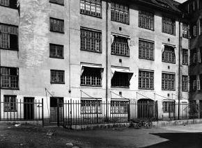
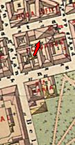
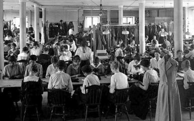
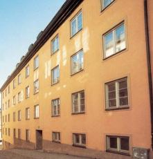

Södermalm i tid och rum. Stockholm


Elis Fischers kappfabrik, Brännkyrkagatan 19, gårdsfasad. 1922

 Elis Fischers kappfabrik, fabrikssalen med sömmerskor i arbete. 1922
Bränkyrkagatan 19
Elis Fischers kappfabrik, fabrikssalen med sömmerskor i arbete. 1922
Bränkyrkagatan 19


På tomten stod från 1792 fram till mitten av 1970-talet en fabrik. 1979 uppfördes ett nytt stenhus på tomten. Fastigheten förvärvades av staden 1944. Hela kvarteret Svalgången, omfattande husen vid Hornsgatan 34, 36 och 38, Bellmansgatan 11 och 7, Brännkyrkagatan 21 och 19 samt Maria Trappgränd 8 och 10 disponeras sedan 1970-talet av Stiftelsen Konstnärshem. Konstnärshem har anvisningsrätten till de drygt 50 lägenheterna, som i första hand är avsedda för pensionerade konstnärer. Utöver bostäder finns här ateljéer, samlingslokaler och läkarmottagning.